Severity: causes errors, slows me down, polish. No finding "blocks work". "Reproduced" is Y when I saw it twice or it is deterministic from the DOM.
| ID | Severity | Where (route, role, data) | What happened | Expected | Suggested fix | Effort | Evidence | Status |
|---|---|---|---|---|---|---|---|---|
| ROOMS-01 | causes errors | /en/rooms, Front Desk, 3 rooms | Front Desk sees the same "Add rooms" button and the same "Block bed" dialog as the Manager. Submitting Add (existing name 101, so nothing could be created) returned only "those rooms cannot be added". It does not say it is a permission matter. The Block form is offered too; I did not submit a valid reason, so the block refusal is from the docs (RB-S3-09: the module answers "cannot be blocked"). | A role without accommodation.configure does not see actions it cannot use, or is told "ask a manager". |
Pass the viewer's accommodation.configure flag to RoomsView; hide Add and Block, keep Report a problem; if kept visible, refusal text names the missing permission. |
S | 10, 11, 12. Reproduced Y | verified (Add) inferred (Block) |
| ROOMS-02 | causes errors | /en/rooms, Manager, Add rooms dialog | The form has no preview of what it will create (for example "301 to 340, floor 3, Block A") and no confirm step: the single "Add rooms" press writes the whole batch. I filled 40 rooms from 301 and stopped before submit, so the post-submit result is from the docs: all rooms are written, and a room cannot be renamed or deleted afterwards (RB-S3-12, RB-S3-15). | I see the exact names I am about to create, and the batch size, before it becomes permanent. | One live line under the fields: "Adds 40 rooms: 301 to 340, floor 3, Block A, sleeps 2". Optionally a two-step confirm above 10 rooms. | S | 02. Reproduced Y | verified (no preview/confirm) inferred (permanence) |
| ROOMS-03 | causes errors | /en/rooms and /tr/rooms, Manager, Add rooms with a name that exists | Refusal reads "a Unit named 101 is already at this Property": lowercase "a", the word "Unit" (the screen says room everywhere), and in the Turkish UI the message stays in English. The module's error text is passed straight to the screen. The refusal itself is good: nothing was written (still 3 rooms) and the form kept my values. | Plain, localised copy: "Room 101 already exists. Pick a different first number." | Map the module's error types to translation keys in the server action instead of returning error.message. The same applies to the Block refusals and to the English fallback strings "those rooms cannot be added". |
M | 04, 14. Reproduced Y | verified |
| ROOMS-04 | causes errors | /en/rooms, Manager, invalid first number | Typing "4O1" (letter O) gives the browser's own bubble "Please match the requested format." The field hint says only "Rooms are numbered in sequence starting from here." Nothing says digits only, up to 8. A hotel with rooms like G01 or A-12 gets no explanation (named rooms are out of scope, RB-S2-14). Count 0 gives a native English bubble too. | The hint says "Digits only, for example 101". | Add "digits only" to the hint and use a custom, localised validation message. | S | 03. Reproduced Y | verified |
| ROOMS-05 | slows me down | /en/rooms, Manager, Add rooms dialog | Pressing Escape on a half-filled form (I had entered 40 rooms) closes it with no warning. Reopening shows empty fields but still shows the previous attempt's red error ("a Unit named 101 is already..."). Success also gives no confirmation (no toast, no highlight of the new rooms; the dialog just closes) inferred, from code: success only closes the dialog. | Reopening starts clean; after adding I see "40 rooms added: 301 to 340" and the new rooms highlighted. | Reset the action state when the dialog closes; add a success toast naming the range. | S | No screenshot (state visible only in DOM, read by script). Reproduced Y | verified (Escape, stale error) inferred (no success toast) |
| ROOMS-06 | slows me down | /en/rooms, all roles, whole-room Property | Bed vocabulary on a hotel with no beds: the tiles say "BEDS 3" and "EMPTY BEDS TONIGHT"; the dialog for a whole room is titled "101 - Block bed" with button "Block bed" and, in the list, every row's action is "Block bed". The Add dialog's description repeats the page subtitle ("Every room and bed at this Property, and who is in each one."), which is wrong for an add form. The room type field is labelled "Stay type". The page shows "Rooms & beds" as the h1 and again "Rooms & beds at Demo Otel İstanbul" as the h2. | Whole-room Properties read "Rooms", "Empty rooms tonight", "Block room"; "Room type". | Choose the noun from the unit (room vs bed); give the Add dialog its own description ("Create rooms in one go. They are numbered in sequence."); rename "Stay type" to "Room type"; drop the repeated heading. | S | 01, 05, 02, 09. Reproduced Y | verified |
| ROOMS-07 | causes errors | /en/rooms, Manager, room 102 (guest in house) and 101 (free) | Taking a room out of sale has two overlapping routes and the page does not say which is which. "Block bed" (reason only, no end date) is the big red primary button; "Report a problem" (which carries the real out-of-order switch, an expected-back date and a maintenance assignee) is a small secondary link in the same dialog. A room with a guest in it is offered "Block bed" with no warning; the refusal exists only at submit (RB-S3-03, from the docs: not submitted). The Report form for the occupied room 102 also lets me tick "Take it out of order until it is fixed" and does not mention that a guest is in the room (stopped before submit; outcome not seen). Neither dialog states the consequence before the click: block says nothing about the booking form or check-in; the out-of-order checkbox does say the front desk cannot sell or check anyone in, which is good. | One clear action per intent. A block states "leaves the booking form and refuses check-in; existing bookings stay" and offers an optional "until" date. An occupied room says "Guest ahmed is in this room" before any form. | Show a one-line state banner at the top of the dialog (in house, reserved, free); label the two routes "Block (no maintenance)" and "Out of order (maintenance)"; add an optional return date to a block. | M | 05, 06, 07, 08. Reproduced Y | verified (dialogs) inferred (refusal outcomes) |
| ROOMS-08 | slows me down | /en/rooms, Manager, 3 rooms | The page shows occupied, reserved, free and blocked, but not clean or dirty. The persona's "what is occupied, dirty or blocked right now" takes two screens: Housekeeping shows Dirty, Clean, Inspected and "Ready to let" for the same 3 rooms. For example 101 reads "Free" here and "Clean, waiting for inspection" there. Out-of-order tiles could not be seen (none exist); how they look is inferred from code. | A cleaning chip on each tile, or a link "Cleaning status" to Housekeeping. | Read the housekeeping row per room (already one table per ADR 0029) and show a small chip or a filter. Cheapest: a link to Housekeeping next to the tiles. | M | 01; Housekeeping text read by script. Reproduced Y | verified |
| ROOMS-09 | slows me down | /en/rooms, Manager, list and map | No search, filter, sort or pagination on either view. The list (7 columns) is not searchable although the design (use-case.mmd, "searchable") says it is. The sibling Housekeeping board has search, a Columns control, per-page and paging. With 3 rooms it is invisible; at 40 or 300 rooms the whole property renders at once and finding "412" means scrolling the map. inferred, from code: the read has no limit and the view renders every unit | Type "412" and get the room; filter by status (free, in house, blocked). | Reuse Housekeeping's table toolbar (search, status filter, paging) on the list view. | M | 09. Reproduced Y (absence) | verified (no controls) inferred (scale) |
| ROOMS-10 | slows me down | /en/rooms map, Manager | The only clickable thing on a tile is the small status pill (for example "Free", "ahmed", "Reserved"). Nothing suggests it is a button. Pressing "Reserved" or the guest's name opens the Block dialog, not the booking or the guest, so I cannot see who is arriving or leaving from the tile. The room type is not on the map tiles at all (201 is a Suite; only the list shows it). | Press the tile to see the room's details: type, who is in it, next arrival, with Block as one action there. | Make the whole tile the target; link in-house and reserved states to the Reservation; show the type under the number. | M | 01, 06, 09. Reproduced Y | verified |
| ROOMS-11 | slows me down | /en/rooms at 375 px, Manager | The page does not overflow sideways, but the six stat tiles take about 1.3 screens (tall, two per row) before the first room appears. The list view is a 774 px table in a 341 px scroller, so the "Tonight" state and the action sit off-screen to the right. The section sub-navigation pill "Rooms & beds" is clipped. | On a phone I see room states without scrolling past the counts. | Make tiles a single compact strip on small screens; on narrow widths drop Building and Floor columns or use stacked rows. | M | 16, 17. Reproduced Y | verified |
| ROOMS-12 | polish | /en/rooms at 768 px | The header text ("Rooms & beds at Demo Otel İstanbul" and the subtitle) is squeezed into a narrow column beside the view toggle and Add button; the breadcrumb shows "W... F...". | Title block full width; toolbar wraps below. | Stack the toolbar under the title below the lg breakpoint. |
S | 18 (file name says list; it shows the map view, because the view reset when the viewport changed). Reproduced Y | verified |
| ROOMS-13 | polish | /en/rooms, Manager | The map/list choice is plain client state: it resets to the map on reload and is not in the URL. Floors and buildings are optional in the add form; with none set (this demo) the whole map sits under the heading "NO FLOOR SET", which looks like an error rather than a normal state. | Remember the view per user; show no floor heading when no room has a floor. | Put the view in the URL (?view=list); hide the group heading when every room is ungrouped. |
S | 01. Reproduced Y | verified |
| ROOMS-14 | polish | /en/rooms, Manager, empty Property | Not seen (staging has rooms). From code: an empty Property shows six zero tiles, the view toggle and the empty state "No rooms yet. No rooms have been added to this Property yet. Use 'Add rooms' to create a batch." The empty state has no button of its own, so the call to action is the header button above it. The Housekeeping and Room calendar empty states link to Rooms; this one does not link anywhere. | The empty state itself holds the "Add rooms" button and a one-line example. | Hide the tiles and toggle when there are no rooms; put the Add dialog trigger in the empty state. | S | none | inferred |
| ROOMS-15 | polish | /en/rooms, any role | The page is a server render that only changes when I act or reload; Arrivals polls (ADR 0019). A second desk blocking a room or checking someone in does not appear on my map until I reload. inferred: no polling in the rooms view For a screen whose job is "right now", that is a trust problem. | The map refreshes on its own like Arrivals, or says "as of 14:32". | Reuse the TanStack Query polling pattern from Arrivals, or show a timestamp and a refresh button. | M | none | inferred |
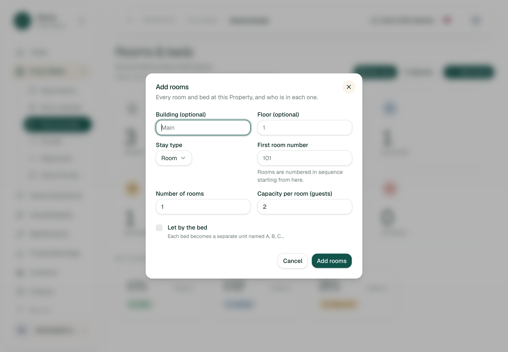
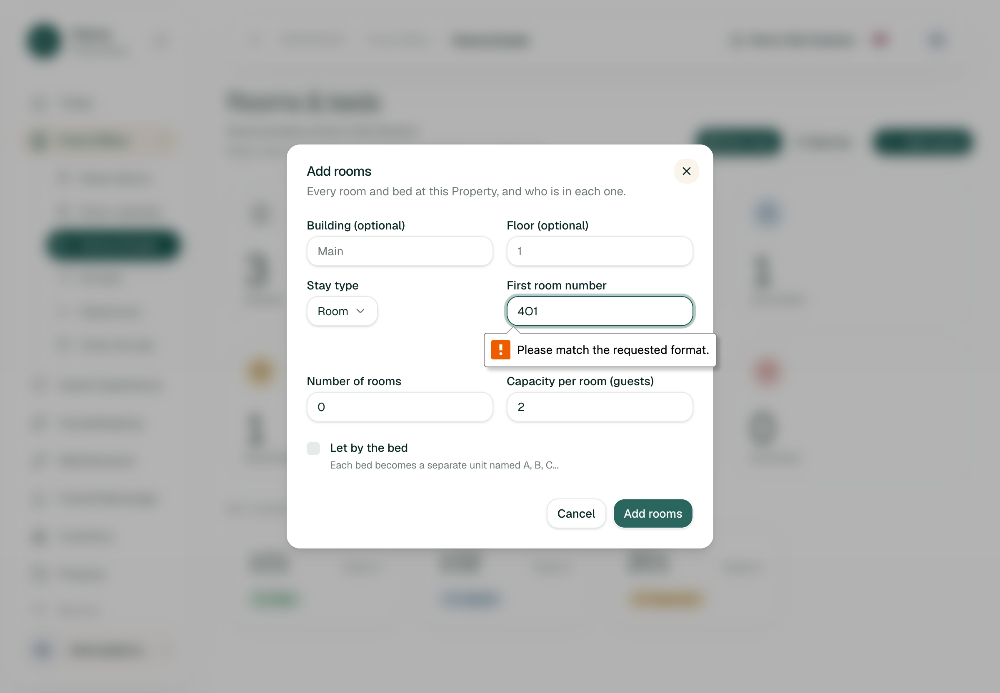
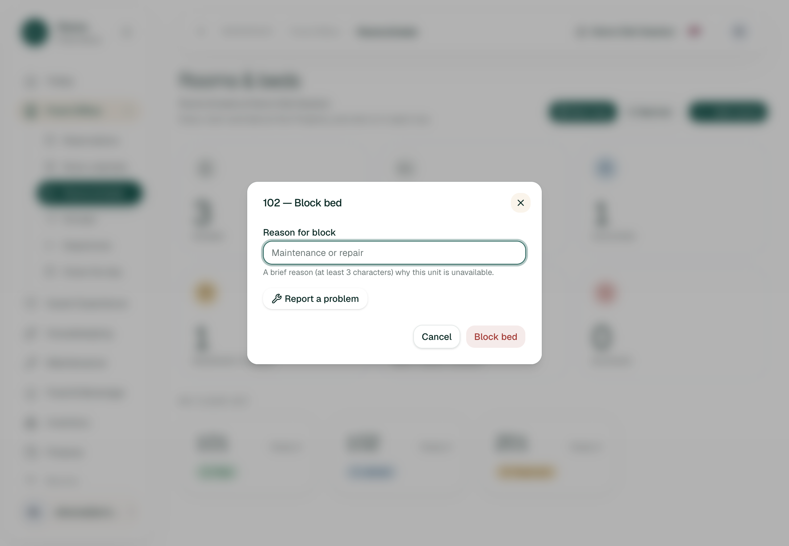
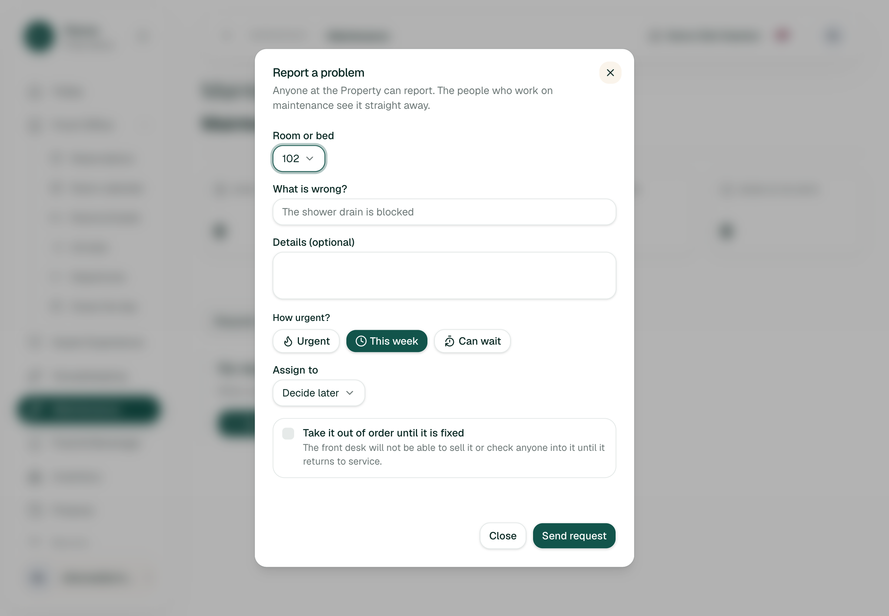
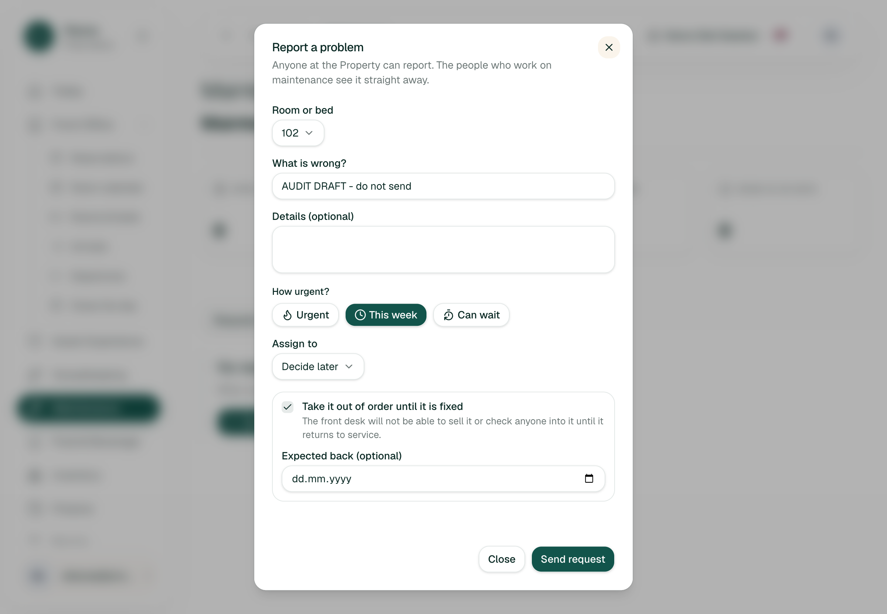
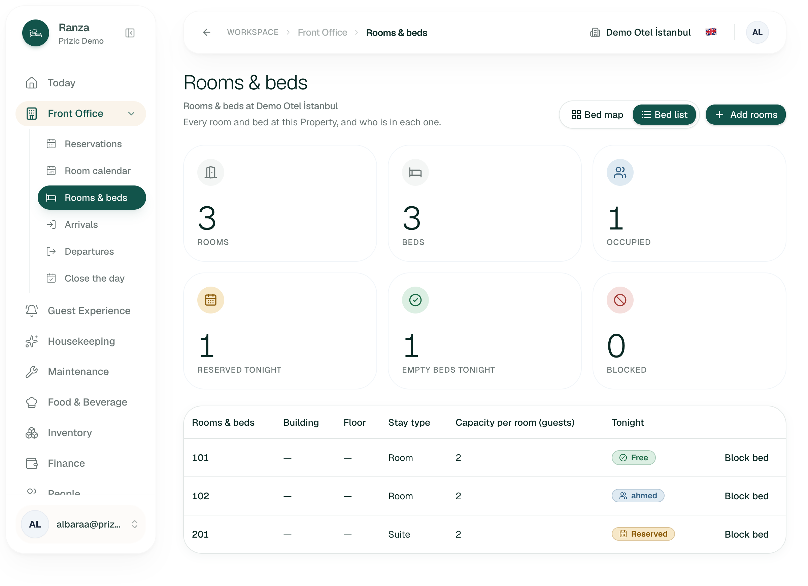
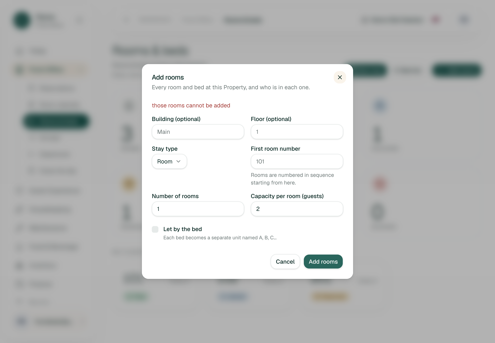
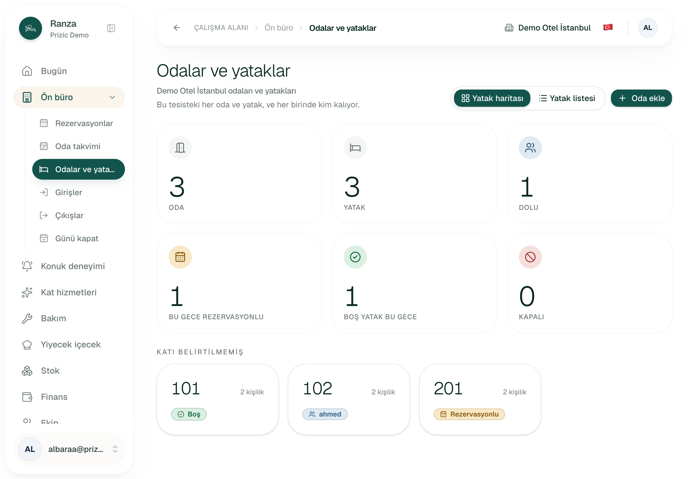
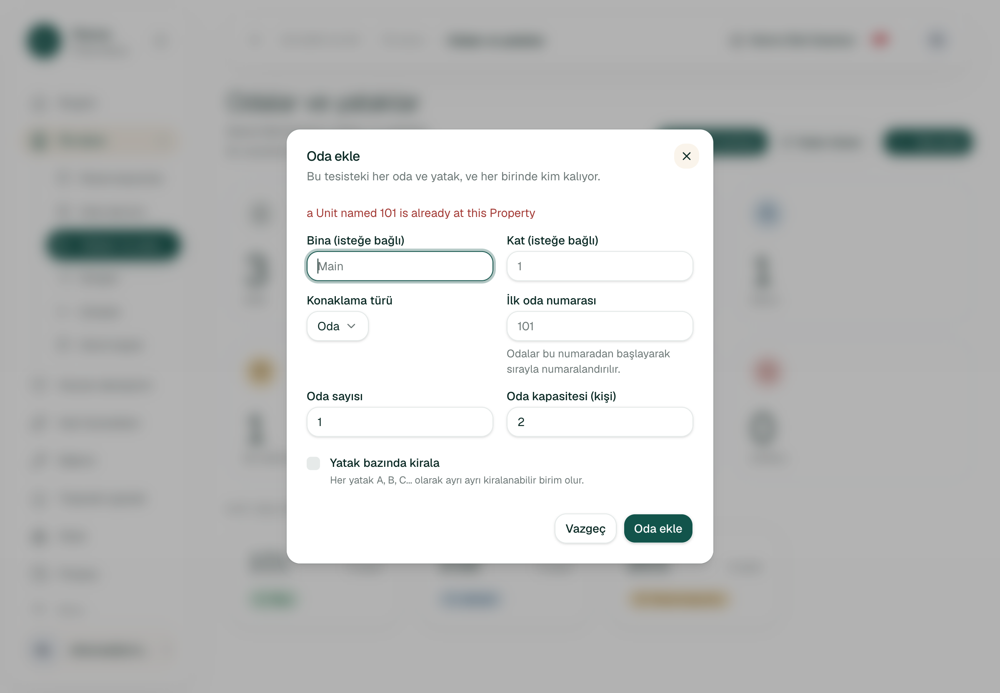
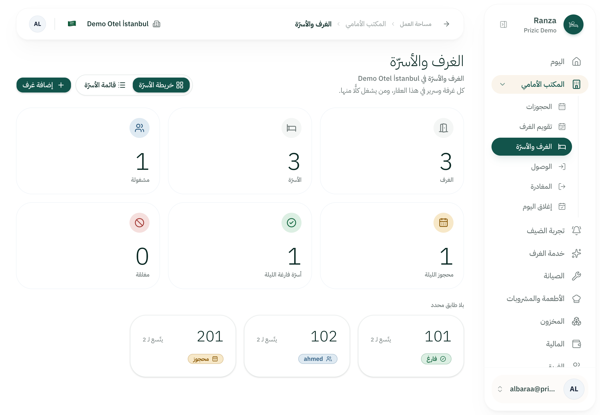
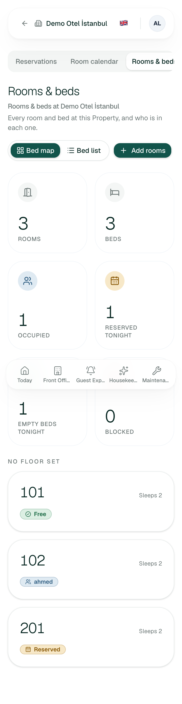
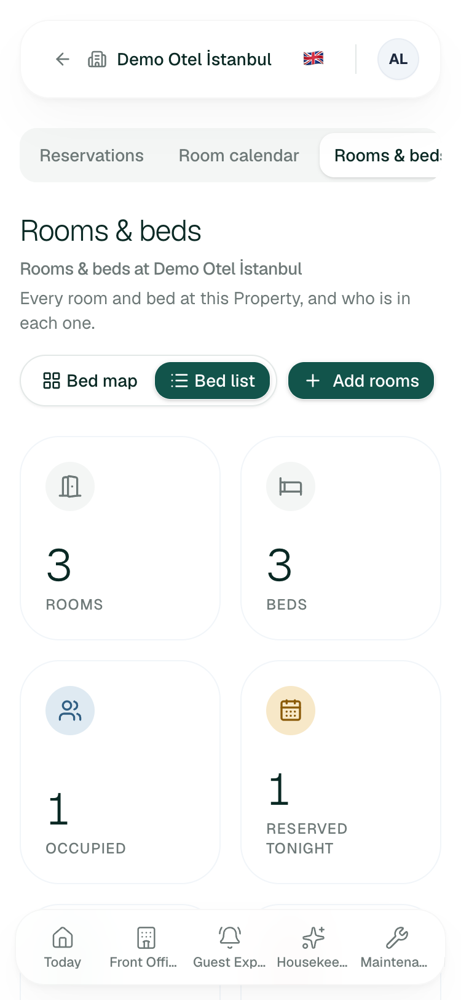
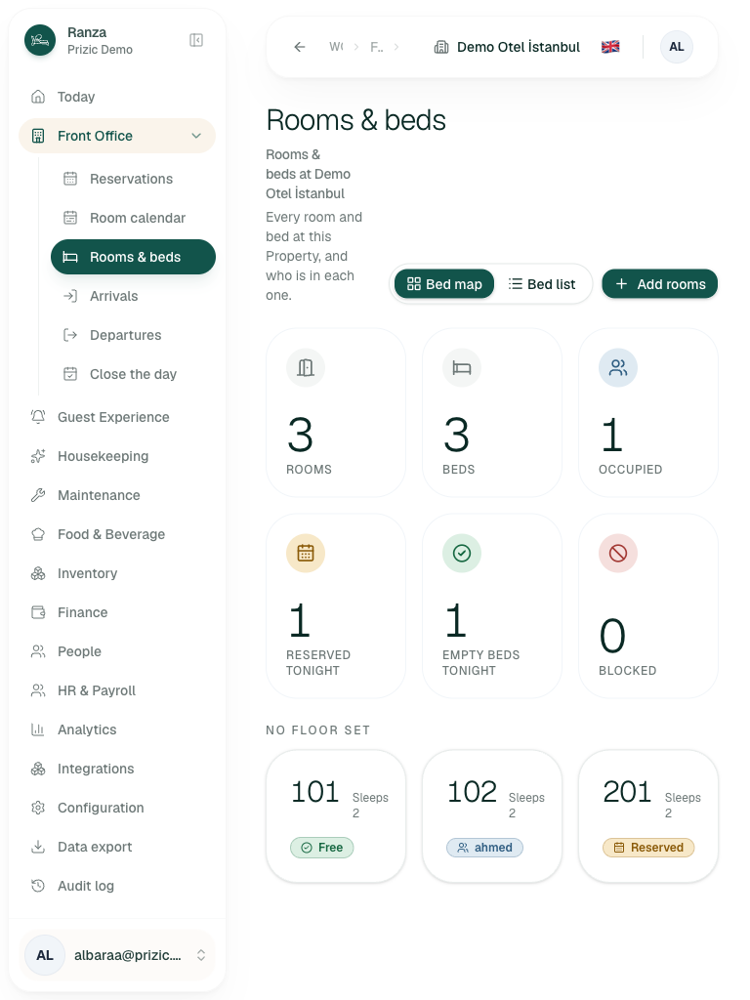
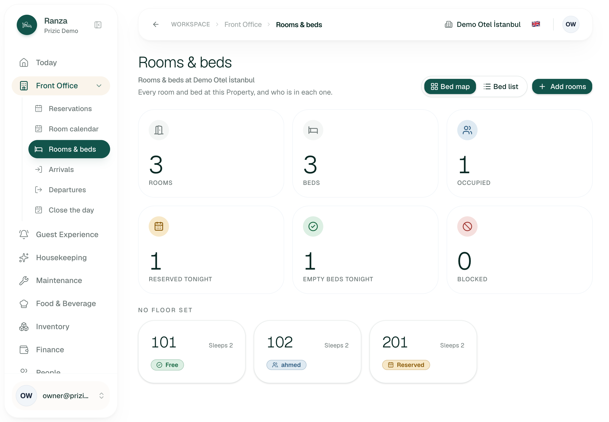
Seconds are my own tool-driven wall time, not a human's; clicks are counted as a person would press them. "Stopped" means halted at the confirm step per the audit-only mode.
| Job | Pass test (written first) | Result | Seconds | Clicks |
|---|---|---|---|---|
| 1. First-time setup: empty Property gets its rooms | From an empty Property I find how to add rooms without help, and the form explains numbering. | Not seen (staging has rooms). Inferred pass with caveats: header Add button plus an empty-state line pointing to it (ROOMS-14). | n/a | inferred 3 |
| 2. Add 40 rooms (301 to 340, floor 3, Block A) | One form, under a minute, I can see the names before they exist, and I can undo a mistake. | Stopped before submit. Form fills in one pass (bulk add exists). Fail on "see names first" (ROOMS-02) and on "undo" (Not built). | ~25 | 2 plus 4 fields |
| 3. Check tonight: who is in, what is free, what is blocked, what is dirty | Within 10 s I answer all four from this page. | Partial pass: occupied (102, with the guest's name), reserved (201), free (101), blocked (0 here) are readable. Dirty is not on the page (ROOMS-08). | ~8 | 0 to 1 |
| 4. Take a room out of service until fixed | In 3 clicks from the room, the screen says what happens to bookings and check-in, and I can set when it returns. | Stopped before submit. Reached the out-of-order form in 2 clicks with the room preselected; the checkbox explains the consequence and offers an expected-back date. Fail on the two overlapping routes and the occupied-room case (ROOMS-07). | ~30 | 3 plus typing |
| 5. Error recovery: bad input | For letters, a zero count, a duplicate and a 2-character reason, the screen tells me what to fix, in my language, and keeps my input. | Partial pass. Reason too short, letters and zero are stopped client-side. Duplicate refused with form kept and nothing written, but copy is English-only and says "Unit" (ROOMS-03, ROOMS-04). | ~40 | 4 |
| 6. Correct a mistake: wrong type or name on an added room | I can change a room's type or name without the database. | Fail. No edit or delete anywhere on the page. Out of scope by design (RB-S3-15), see section 6. | n/a | n/a |
| 7. Front Desk, permission difference | A Front Desk user is not offered what they cannot do, or is told why. | Fail. Add and Block are offered; Add is refused at submit with no reason (ROOMS-01). | ~20 | 3 |
| 8. Under pressure: room 101's AC is dead and a guest arrives in 20 minutes | From the page, I make the room unavailable and tell maintenance in under 30 s. | Stopped before submit. The right tool (Report a problem with out-of-order) is the small secondary link; the large red button blocks without telling maintenance (ROOMS-07). | ~30 | 4 plus typing |
| 9. Locales and layout | TR, AR (RTL) fully translated and mirrored; 375 and 768 usable. | Pass for TR and AR page chrome. Fail on English strings inside dialogs (ROOMS-03) and layout issues at 375 and 768 (ROOMS-11, ROOMS-12). | ~60 | n/a |
docs/features/rooms-and-beds/edge-cases.csv (RB-S2-13, RB-S2-15, RB-S3-14). Not reported as defects.docs/roadmap.md.